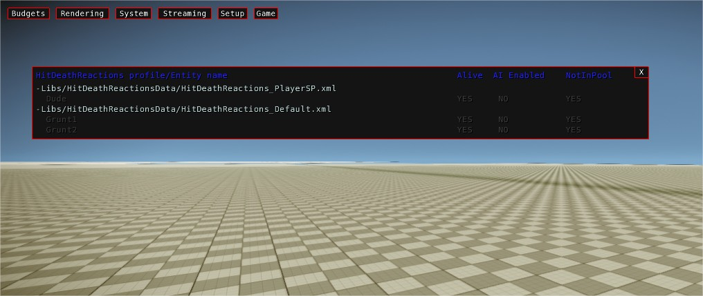

Overview
This system allows the game code to automatically execute a reaction that fits the context when a character is hit (HitReaction) or dies (DeathReaction).
When a Hit or a Death is detected on an actor the system evaluates the list of reactions that actor holds and chooses the first one that matches the validation criteria. After that it executes it. Hit reactions and Death reactions are very similar, but the latter ones will always end up with the actor ragdollized.
Some rules
- A hit reaction can never interrupt another ongoing hit reaction.
- A death reaction can always interrupt an ongoing hit reaction reaction UNLESS reactions have been explicitly forbidden by using the animation event "ForbidReactions".
- Reactions have to notify their end to the system. If they are animation reactions, the end is automatically notified when the end of the animation is reached, or when a "DeathReactionEnd" animation event is triggered while playing a death reaction. The system has a fallback behavior so when a reaction has been running for more than 3 seconds (subject to change) the end is forced.
Reactions
The reactions are contained on a LUA table that is parsed from an XML data file whose filepath is contained within BasicActor's fileHitDeathReactionsParamsDataFile property, so it can be customized per archetype. This could change in the future so it uses PropertyInstances to be able to customize the filepath per actor instance on the level (see Future Plans section) and whose format is described in the definition file Scripts/GameRules/HitDeathReactions_Defs.xml" (see the XML Loader documentation to understand how the code parses the data file and why we need a separate definition file).
Each reaction provides:
- an optional
validationFuncproperty (specifying the name of the lua function insideHitDeathReactions.luathat contains customized validation code). - an optional
reactionFuncproperty (specifying the name of the lua function insideHitDeathReactions.luathat contains customized execution code). - Some other properties that will be used for the validation and/or execution steps (for more details read ).
Validation/s
The system goes through the list of reactions in the order they are defined in the data file and evaluates them. A reaction is OK to go if any of its validations is successful. Each validation can choose which validation code is run to know if it's valid. That validation code may use properties inside that validation. By default the validations use some LUA and C++ code that executes a default validation code, but if there is an specific case that needs additional/different checks there's also the possibility of specifying a customized LUA or C++ validation function to do it. More details about how to write reaction validations in this chapter of the Reactions XML Format Description page.
Default Validation
If no customized validation function is provided, the system runs the default validation code.
If the CVar g_hitDeathReactions_useLuaDefaultFunctions is true, the default validation code consists on calling the LUA method HitDeathReactions:DefaultValidation() (which internally calls the C++ method CHitDeathReactions::IsValidReaction()), if not it calls directly the C++ code CHitDeathReactions::IsValidReaction().
For more information about the Default Validation method and properties check the .
Custom Validation
Custom executions can be written in LUA or C++:
LUA Custom validation functions
They are LUA functions that receives two arguments: the reaction params table for the reaction being evaluated and the hitInfo table, with the data of the hit that generated the Hit or Death event. It's expected to return a boolean true or false depending on if the reaction is validated or not.
Example:
function HitDeathReactions:ExampleValidation(validationParams, hitInfo, causedDamage)
-- uses the default C++ validation code and additionally checks for the damage caused by the hit to be greater than 80
local bValidated = self.binds:IsValidReaction(validationParams, hitInfo) and (causedDamage > 80);
return bValidated;
end
LUA Validation functions shouldn't be used on final builds, since they can make the hit process extremely slow.
C++ Custom validation functions
Can be registered through the CCustomReactionFunctions object (that you can obtain from the CHitDeathReactionsSystem instance) and the method RegisterCustomValidationFunction.
Their signature is bool (CActor&, const SReactionParams::SValidationParams&, const HitInfo&, float fCausedDamage). e.g.,
// ...
const CCustomReactionFunctions& customReactions = g_pGame->GetHitDeathReactionsSystem().GetCustomReactionFunctions();
customReactions.RegisterCustomValidationFunction("DeathImpulse_Reaction", functor(*this, &CMyClass::FallNPlay_Validation));
// ...
Execution
Once a reaction is validated successfully, the system executes it. There is some LUA and C++ code already that runs a default execution code, but if there is an specific case that needs additional effects there's also the choice of using a customized LUA execution function to do it.
For more information about the Default Execution method check the .
Default Execution
If no customized execution function is provided, the system runs the default execution code.
If the CVar g_hitDeathReactions_useLuaDefaultFunctions is true, the default execution code consists on calling the LUA method HitDeathReactions:DefaultHitReaction() (which internally calls the C++ method CHitDeathReactions::ExecuteHitReaction()), if not it calls directly the C++ code CHitDeathReactions::ExecuteHitReaction().
The default execution does the following:
- Plays an animation using the animation graph by setting the signal input with the provided value and (optionally) some input variations OR...
- Plays an animation bypassing the animation graph by using the animation name as defined on the animation .cal file.
Custom Execution
Custom executions can be written in LUA or C++:
LUA Custom execution functions
They are LUA functions that receives only one argument: the reaction params table for the reaction being executed. Its return value is ignored.
Example:
function HitDeathReactions:ExampleExecution(reactionParams)
-- Enables Fall and Play on the actor and notifies the end of the current reaction after 1 second
self.entity.actor:Fall({x=0,y=0,z=0});
Script.SetTimer(1000, self.binds.EndCurrentReaction, self.binds);
end
C++ Custom execution functions
Can be registered through the CCustomReactionFunctions object (that you can obtain from the CHitDeathReactionsSystem instance) and the method RegisterCustomExecutionFunction.
Their signature is void (CActor&, const SReactionParams&, const HitInfo&). e.g.,
// ...
const CCustomReactionFunctions& customReactions = g_pGame->GetHitDeathReactionsSystem().GetCustomReactionFunctions();
customReactions.RegisterCustomExecutionFunction("DeathImpulse_Reaction", functor(*this, &CMyClass::DeathImpulse_Reaction));
// ...
Some C++ Custom execution functions are already being registered inside the CCustomReactionFunctions class. See void CCustomReactionFunctions::RegisterCustomFunctions()
Network
Implementation is bound to be changed, so this section is more a list of observations than anything else.
- Current implementation runs both validation and execution codes in both sides (client and server). This can cause problems due the fact that both sides are not guaranteed to have the exact same state and context at any moment, so for the same hit the validations can return different results depending on the side they are validated. The way so solve this is to run the validation code only on the local machine (not necessarily the server, though this could cause some other issues due the damage calculation being processed only on the server) that generated the hit and serialize an identifier (i.e: an index) for the selected reaction to the other sessions. This will also simplify the random probability selection.
- Hit Reactions don't work well over the network on the current codebase.
Streaming
To minimize the memory footprint of the reaction animations the system uses a streaming strategy, described next.
Since we can't predict which reaction is the next to be played and we need immediate animation playback (we can't afford 1 second of streaming between the hit and the reaction) we need to pre-load the next animation to be played per reaction. For reactions with several animations we only need to pre-load one of them, and when that one is played we can release it and request streaming of the next random variation. So only one reaction anim variation is loaded per reaction.
(Specific for "g_hitdeathReactions_streaming 1" mode): The above is only true if at least on of the actors using the reaction profile (= reaction xml) is alive AND has its AI enabled AND is not pooled in the Entity Pool. If no actor fulfills those requirements, the reaction animations are released from memory.
The reaction animations are only locked if the profile is valid and is loaded, that is, if there are entities using it.
Only reaction anims are locked. Animation-graph based reactions can't lock any animation since they don't know which anim the animation graph input will trigger (so those anims must be locked externally)
Debugging
You can see debugging information about the entities using and forcing reaction anims in memory with a sub-menu on the perfHUD menu for that use. Access perfHUD (Console Variable: sys_perfHUD 1) and go to Game->HitDeathReaction Streaming. Click on that entry and you'll see the following:

(switch to perfHUD "view" mode to make the table translucent and be able to see the background)
The table shows the reactions profiles and the entities using them. When the reactions have their reaction animations loaded in memory, they are printed in white. When they are not they are printed in grey. The entities below show if they are alive, have their AI Proxy enabled and are out of the Entity pool (remember the three of them have to be True for that entity to be able to request the loading of its reaction anims). If any of the conditions are constantly displayed in red that could be pointing to a problem so please let a system's GoTo person know about it.
Related CVars
g_hitDeathReactions_enable. Enables/disables the system.g_hitDeathReactions_useLuaDefaultFunctions. If enabled, it'll use the default lua methods inside HitDeathReactions script instead of the default c++ version. This is not recommended for other than testing purposes, since the call to the lua default code (that calls back the C++ code) is expensive.g_hitDeathReactions_disable_ai. If enabled, it won't allow to execute any AI instruction during the hit reaction.g_hitDeathReactions_debug. If enabled, it displays some debug information on top of the actors using the system.g_hitDeathReactions_disableRagdoll. Disables enabling the ragdoll at the end of death reactions.g_hitDeathReactions_logReactionAnimsOnLoading. If this CVar is enabled it will make the system log the reaction anims specified on the reaction files. When using "1" as value, it will log the animation names; when using "2" as a value it will log the animation filepaths.g_hitDeathReactions_streaming. Enables/disables the streaming management for the reaction assets. "1" enables the default logic, which locks the animations only if there's at least one character using them that is alive, with its AI enabled and out of the entity pool. "2" enables a simpler logic, reaction profile-based, which basically translates into saying that the reaction animations are locked whenever the entity of at least one of the actors using them exists.g_hitDeathReactions_reload. Reloads all the system on-the-fly: LUA code, XML Definition file and XML Data files.g_hitDeathReactions_dumpAssetUsage. This command dumps information about asset usage in the system, in a "loaded assets vs total assets" format. Useful when streaming management is enabled for the HitDeathReactions system to have a rough estimation of how much memory are you saving.
Related Files
- C++ code files
GameDll/HitDeathReactions.cppGameDll/HitDeathReactions.hGameDll/HitDeathReactionsSystem.cppGameDll/HitDeathReactionsSystem.hGameDll/HitDeathReactionsDefs.cppGameDll/HitDeathReactionsDefs.hGameDll/CustomReactionFunctions.cppGameDll/CustomReactionFunctions.h
- C++ Script binds for use in customized functions
GameDll/ScriptBind_HitDeathReactions.cppGameDll/ScriptBind_HitDeathReactions.h
- LUA code file
Scripts/GameRules/HitDeathReactions.lua
- Definition file
Scripts/GameRules/HitDeathReactions_Defs.xml
- Data files
Libs/HitDeathReactionsData/*.xml
Hints for using the system
- When working on the data file, start by defining the most specific reactions and end with the most generic ones.
- When adding a new reaction, test it by placing its definition at the beginning of the data file and removing any conditions for validation, that way that reaction will be selected 100% of the cases, so you can test its execution easier. Once the execution has been tested you can start adding its validation constraints until you are sure it's selected on the expected context. Then move it to the position on the reaction list that makes sense. Use
g_hitDeathReactions_reloadcommand on each change and you'll be done in a few minutes. - Customized functions are only for very isolated and specific cases or for quick tests. If you find yourself using a customized function a lot, then that code is better moved to C++ code.
- Use XML Entities to avoid duplication on the XML files. When supported, use external entities as much as makes sense.
- The HitReactions LUA table has the field
"binds"that holds all the script binds registered on ScriptBind_HitDeathReactions.cpp. - The HitReactions LUA table has the field
"entity"that holds the entity LUA table of the associated actor. - The entity LUA table has the field
"hitDeathReactions"that holds the HitDeathReactions LUA table of that actor.
Reactions XML Format Description
Please read the .
System-related animation events
DeathReactionEnd. Ends the current reaction immediately. For Death Reactions this translates into triggering the ragdoll right away, for Hit Reactions this translates into triggering fall and play (if possible). If the custom parameter of this animation event is "sleep" the ragdoll is forced to sleep when triggered (which means it freezes until stimulated by a physic force); this is used only for microwave deaths at the moment.RagdollStart. Ends the current reaction at a random time between the animation is triggered and the end of the animation. For Death Reactions this translates into triggering the ragdoll right away, for Hit Reactions this translates into triggering fall and play (if possible). If the custom parameter of this animation event is "sleep" the ragdoll is forced to sleep when triggered (which means it freezes until stimulated by a physic force); this is used only for microwave deaths at the moment. If triggered outside of a hit/death reaction it will activate the ragdoll on the character.ReactionOnCollision. Used for animated collision with the environment reactions. See associated info on the .ForbidReactions. Forbids/Allows reactions. If the custom parameter is "0" any reaction triggered while playing this reaction animation will be forbidden (when the animation ends, everything goes back to normal). If the custom parameter is different than "0" reactions will be allowed again.
Example data file
<?xml version="1.0"?>
<!-- DTD for defining XML Internal General Entities. Think of them as macros -->
<!DOCTYPE HitDeathReactions_Example [
<!ENTITY Legs '
<Part value="L Leg01"/>
<Part value="L Leg02"/>
<Part value="L Leg03"/>
<Part value="L Foot"/>
<Part value="R Leg01"/>
<Part value="R Leg02"/>
<Part value="R Leg03"/>
<Part value="R Foot"/>
'>
<!-- Lower body part names -->
<!ENTITY LowerBody '
<Part value="Pelvis"/>
&Legs;
'>
]>
<DeathHitReactionsParams>
<!-- HIT REACTIONS -->
<HitReactionParams>
<!-- Uses a customized validation and runs customized execution when moving forward and hit on the legs with the (fictional) hitType Sniper, 50% of the time -->
<HitReactionParam reactionFunc="ExampleExecution" validationFunc="ExampleValidation" movementDirection="forward" minimumSpeed="2.0" probabilityPercent="0.5">
<AllowedParts>
&Legs;
</AllowedParts>
<AllowedHitTypes>
<HitType value="Sniper"/>
</AllowedHitTypes>
</HitReactionParam>
<!-- Plays an animation when hit on the lower body from 180º behind, only when standing and static -->
<HitReactionParam animName="hitReact_Leg_back_3p_01" maximumSpeed="2.0" shotOrigin="behind">
<AllowedParts>
&LowerBody;
</AllowedParts>
<AllowedStances>
<Stance value="STANCE_STAND"/>
</AllowedStances>
</HitReactionParam>
</HitReactionParams>
<!-- DEATH REACTIONS -->
<DeathReactionParams>
<!-- Sets the input "signal" of the Animation Graph to be "DR_collapse" and sets VariationInput "part" to be "head" when killed by a headshot on any standing stance -->
<DeathReactionParam>
<AnimGraphReaction inputValue="DR_collapse">
<Variations>
<Variation name="part" value="head" />
</Variations>
</AnimGraphReaction>
<AllowedStances>
<Stance value="STANCE_STAND"/>
<Stance value="STANCE_RELAXED"/>
<Stance value="STANCE_STEALTH"/>
</AllowedStances>
<AllowedParts>
<Part value="Head"/>
</AllowedParts>
</DeathReactionParam>
</DeathReactionParams>
</DeathHitReactionsParams>